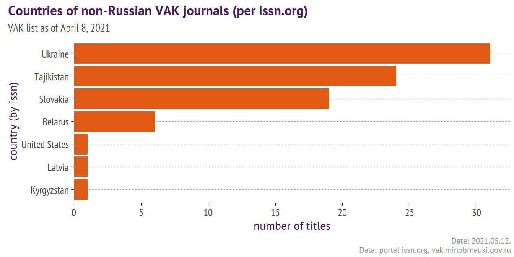
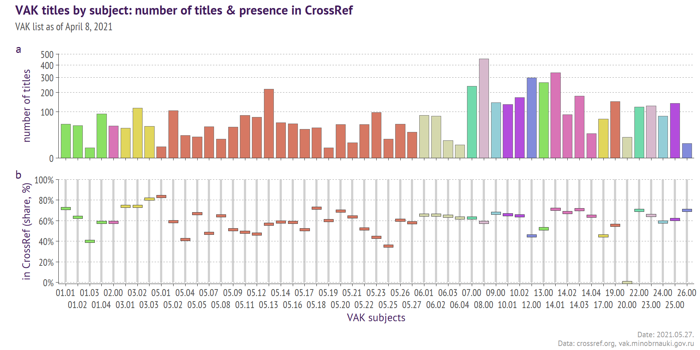

In this post I am checking how many academic journals from the Russian white list (VAK) deposited their 2020/2021 publications in CrossRef. To do that I queried portal.issn.org & CrossRef, and parsed PDF & JSON files, what I think makes this post of interest to those who analyze the academic journals.
In a previous post I ventured to parse a 853-page PDF file released by VAK (Russian state regulator) and extracted a list of journal titles. For the Russian academic journals being listed by VAK is a sort of endorsement, as it makes the publications scored:
in some assessment exercises run by funders & ministries,
for academic degree pre-assessment (main results must be published in at least X credible journals).
The international journals indexed in Scopus, WoS, CAS, etc are also counted as credible titles, so VAK list is not a big deal for those who can draft a proper research manuscript in English language (or pay for that) and compete for a publication in the international journals.
Other researchers (no, not “are quite dreadful,” as Oscar Wilde suggested) may have their reasons to place their materials in the VAK-listed journals. But what I think many people are missing here is that some of VAK titles are absent in CrossRef and invisible to the international search engines. Sort of ferae naturae, endangered to disappear in case of … the publisher’s bankrputcy or anything else.
So I decided to check which VAK titles are present in CrossRef with 2020/2021 publications. This is not a difficult thing to do via CrossRef API, but life, of course, proves not to be that plain - the titles can be registered in CrossRef not with the ISSN present in the VAK list, but with the other one, not listed in the VAK list.
This means that first I need to collect the additional ISSNs from ISSN Portal and only then to check them in CrossRef.
The parsed list can be downloaded from Figshare with the following code:
but for speed I will take it from a hard disk.
data <- read_csv(paste0(dir, "2021_04_vak_list_parsed_data.csv"),
col_types = cols(.default = col_character()))
At the next step I extract the unique ISSNs and here came the first observation. The VAK list contained the different rows sharing the same ISSNs.
issns_list <- data %>% select(title, issns = issn) %>%
mutate(issn = str_split(issns,",")) %>% unnest(issn) %>%
distinct() %>% na.omit()
issns_list %>% group_by(issn) %>%
mutate(n_titles = n_distinct(title)) %>% ungroup() %>%
filter(n_titles>1) %>% select(title, issns, issn) %>% arrange(issn) %>%
mutate(issns = gsub(",",", ", issns)) %>%
DT::datatable(escape = FALSE, class = 'compact',
options = list(pageLength = 5, deferRender = TRUE,
autoWidth = TRUE, ordering = TRUE, scrollX = TRUE))
It appears like some journals have individual e-versions, but are printed under one cover. Well, if so, this can be understood, of course. I do not check this and leave it as it is.
I also manually corrected 2 ISSNs that had wrong format in the original VAK list - “999–4133” (corrected version is 1999-4133) and “224–9877” (changed to 2224-9877).
To obtain information from ISSN.org I am using a query that saves the results to the hard disk in PDF format:
https://portal.issn.org/custom-search/print/2077-9038/publicFor this I created a downloading function “readUrl”, which is a wrapper of download.file function into a life-saving tryCatch. So the function takes URL and filename, saves the file and returns OK or an error.
And now - let’s run a cycle and download all the pdf files to the hard disk.
for (k in which(issns_list$issn_pdf==""|is.na(issns_list$issn_pdf))){
print(k)
q <- issns_list$issn[k]
url <- paste0("https://portal.issn.org/custom-search/print/",q,"/public")
filename <- paste0(dir0, gsub("-","_", q), "_issn.pdf")
issns_list$issn_pdf[k] <- ifelse(file.exists(filename),
"OK", readUrl(url, filename))
}
The Portal gives a quick response, so a whole process took about 30 minutes.
Next step would be to parse the downloaded PDF files and link it to the original VAK list.
I will extract a text layer using pdftools package. The information is arranged in the following format Key:Value, so taking some measures for not losing the broken lines and not processing the special lines containing “:” , I have extracted it all.
library(pdftools)
tt <- tibble()
for (z in 1:nrow(issns_list)){
print(z)
q <- issns_list$issn[z]
filename <- paste0(dir0, gsub("-","_", q), "_issn.pdf")
if(file.exists(filename)){
txt <- suppressMessages(pdf_text(filename)) %>% paste(collapse="\\\r\\\n")
# some PDFs contains history of publishers, we take only the current info
if(grepl("From:", txt)){
txt <- strsplit(txt, split = "From:") %>% map_chr(`[`,1)
}
txt <- strsplit(txt, split = "\\\r\\\n") %>%
map_dfc(~.x) %>% rename(extracted = 1) %>%
mutate(tag = ifelse(grepl("\\:",extracted), row_number(), NA_integer_)) %>%
mutate(tag = ifelse(grepl("Seri.:|Серия:", extracted), NA_integer_,tag)) %>%
fill(tag, .direction = "down") %>%
group_by(tag) %>%
summarize(txt = paste(unique(na.omit(extracted)), collapse = " ")) %>%
ungroup() %>%
mutate(issn = q)
tt <- bind_rows(tt, txt)
}
}
# a bit of cleaning / glueing here
tt_group <- tt %>%
# separating the key and the value
## a bit cmplex regex to avoid splitting after the word "Seria":
mutate(tag = ifelse(grepl("^[^:]*?Seri.:|^[^:]*?Серия:", txt), NA_integer_,tag)) %>%
mutate(tag = ifelse(grepl("^http", txt), NA_integer_,tag)) %>%
fill(tag, .direction = "down") %>%
group_by(issn, tag) %>%
summarize(txt = paste(unique(na.omit(txt)), collapse = " ")) %>%
ungroup()
# glueing
tt_group <- tt_group %>%
mutate(key = str_extract(txt, "^[^:]+?:"),
txt = str_replace(txt, "^[^:]+?:","")) %>%
mutate(txt = gsub("!Seri",": Seri", txt)) %>%
mutate_all(~str_squish(str_replace_all(.x, "\\\\\\r\\\\\\n|:$",""))) %>%
# gluing together
group_by(issn, key) %>%
summarize(value = paste0(unique(na.omit(txt)), collapse = " | ")) %>%
ungroup() %>%
# converting into a wide format
pivot_wider(id_cols = issn, names_from = key, values_from = value) %>%
distinct()
issns_list <- issns_list %>%
select(-issn_json, -issn_pdf) %>%
left_join(tt_group) %>% distinct()
write_excel_csv(issns_list, paste0(dir, "2021_04_vak_issn_info.csv"))
issns_list <- read_csv(paste0(dir, "2021_04_vak_issn_info.csv"),
col_types = cols(.default = col_character()))
At this stage we quickly look at the information obtained from ISSN Portal for 2678 ISSNs present in the VAK list (2586 titles). The collected data is a dataset of 2686 rows and 44 cols, a large part of it is empty.
Few interesting observations:
(1) there is no information at ISSN Portal for some titles
The ISSNs to Russian journals are assigned by the National ISSN Centre, so all questions about the titles not being present in ISSN.org must be addressed to them. The table below lists such journals.
issns_list %>% select(-issn) %>% distinct() %>%
filter_at(c("Country", "ISSN", "Key-title", "URL", "Title proper"), ~is.na(.x)) %>%
select(vak_title = title, vak_issns = issns,
`issn.org issn` = ISSN, `issn.org title` = "Key-title") %>%
DT::datatable(escape = FALSE, class = 'compact',
options = list(pageLength = 5, deferRender = TRUE,
autoWidth = TRUE, ordering = TRUE, scrollX = TRUE))
(2).Some ISSNs are not affiliated with Russian Federation
issns_list %>%
select(vak_title = title, vak_issns = issns,
`issn.org country` = Country, `issn.org title` = "Key-title",
`issn.org language` = Language,
`issn.org prev.publisher` = `Earliest publisher`,
`issn.org latest.publisher` = `Latest publisher`) %>%
filter(!is.na(`issn.org country`)&!grepl("Russia", `issn.org country`)) %>%
count(`issn.org country`) %>% arrange(-n) %>%
ggplot()+
geom_bar(aes(y = reorder(`issn.org country`,n), x = n), stat = "identity",
fill = "#e05915", color = "grey50", size = 0.1)+
labs(x = "number of titles",
y = "country (by issn)",
title = "Countries of non-Russian VAK journals (per issn.org)",
subtitle = "VAK list as of April 8, 2021",
caption = paste0("Date: ", format(Sys.time(), '%Y.%m.%d'),
".\nData: portal.issn.org, vak.minobrnauki.gov.ru"))+
scale_x_continuous(expand = expansion(mult = c(0,0.05)),
breaks = scales::pretty_breaks(6))+
my_theme

Quite a set of countries for the Russian white list!
issns_list %>%
select(vak_title = title, vak_issns = issns,
`issn.org country` = Country, `issn.org title` = "Key-title",
`issn.org language` = Language,
`issn.org prev.publisher` = `Earliest publisher`,
`issn.org latest.publisher` = `Latest publisher`) %>%
filter(!is.na(`issn.org country`)&!grepl("Russia", `issn.org country`)) %>%
arrange(`issn.org country`) %>%
DT::datatable(escape = FALSE, class = 'compact', rownames = FALSE,
options = list(pageLength = 5, deferRender = TRUE,
autoWidth = TRUE, ordering = TRUE, scrollX = TRUE,
columnDefs = list(
list(width = '200px', targets = c(5:6)),
list(width = '300px', targets = c(0,3)),
list(className = 'dt-center', targets = c(1)),
list(className = 'dt-left', targets = c(0, 2:6)))))
Slovakia case seems to be plain - Russian publisher sold its academic titles to Slovakian company (or registered a new one), so now they are de jure Slovakian. But when it comes to the titles registered as Ukrainian, Belarusian or Tajik, an explanation will not be that plain. I would refrain from speculations about this.
Now we are ready to move on to CrossRef.
There is a convinient R wrapper for CrossRef API rCrossRef, but with the complex queries, with few filters, I like to use API service directly and save JSON files to the hard disk (not to parse them on a flight).
Such approach makes sense for me - if anything goes wrong I can break the process and start it all over, the saving script checks the existing files and will skip what’s been already saved.
A query to get 5 random articles published after 2019 in a journal title with ISSNs (1811-833X, 2311-7133) will consist of 3 parts:
API-server: https://api.crossref.org/works
Query: ?filter=issn:1811-833X,issn:2311-7133,from-pub-date:2020&rows=5
Attributes: &mailto=hereisyouremail.
Of course, we will also exploit ISSN-Ls collected from ISSN.org.
And a cycle.
dir0 <- paste0(dir, "pdf_cr/")
for (i in which(issns_cr$cr_file==""|is.na(issns_cr$cr_file))){
print(i)
q <- issns_cr$issns[i] %>% strsplit(., split = "\\,")
url <- paste0("https://api.crossref.org/works?filter=",
unlist(q) %>% paste0("issn:",., collapse = ","),
",from-pub-date:2020&rows=5&mailto=", my_email)
filename <- paste0(dir0, issns_cr$code[i],".json")
issns_cr$cr_file[i] <- ifelse(file.exists(filename),"OK", readUrl(url, filename))
}
I had to make breaks few times during this cycle, so I can not accurately estimate a total execution time, but I feel like that it would not take longer than an hour or so, was it run without interruptions.
Let’s parse it with a package jsonlite to extract some data from CrossRef files.
library(jsonlite)
cr_data <- data.frame()
for (i in 1:NROW(issns_cr)){
print(i)
filename <- paste0(dir0, issns_cr$code[i],".json")
jdoc <- fromJSON(filename, flatten = TRUE) %>% .$message
# total number of articles (it is in a header)
total <- jdoc %>% .$`total-results` %>% as.character()
# other data (it is in the json items)
a <- jdoc %>% .$items
if(length(a)>0){
if(exists("issn-type", a)){
cristy <- a$`issn-type` %>% map_dfr(~.x) %>%
unite(col = "issns", c("type", "value"),sep=":") %>%
unique() %>% map_chr(paste0, collapse = "|")
}
if(exists("ISSN", a)){
crisis <- a$ISSN %>% unlist() %>% unique() %>% paste0(., collapse = "|")
}
a2 <- a %>% select(any_of(c("prefix", "member", "publisher"))) %>%
mutate_all(~as.character(.x)) %>%
mutate(code = issns_cr$code[i],
cr_issn_type = cristy,
cr_issns = crisis,
cr_2020_2021 = total)
a2 <- a2 %>%
select(any_of(c("prefix", "member", "publisher", "code",
"cr_issn_type", "cr_issns", "cr_2020_2021"))) %>%
pivot_longer(-"code") %>%
unique()
cr_data <- bind_rows(cr_data, a2)
}
}
The parsed data is then grouped and converted into a wide format.
cr_data_wide <- cr_data %>% distinct() %>%
group_by(code, name) %>%
summarize(value = paste0(unique(na.omit(value)), collapse = " | ")) %>%
ungroup() %>%
pivot_wider(id_cols = code)
issns_cr_merged <- issns_cr %>% left_join(cr_data_wide)
write_excel_csv(issns_cr_merged, paste0(dir, "2021_04_vak_crossref_info.csv"))
issns_cr_merged <- read_csv(paste0(dir, "2021_04_vak_crossref_info.csv"),
col_types = cols(.default = col_character(),
cr_2020_2021 =col_integer()))
## lets merge all the datasets together in this chucnk
issn_bit <- issns_list %>%
select(title, Country, issnL = `Linking ISSN (ISSN-L)`,
title.proper = `Title proper`) %>%
group_by(title) %>%
summarize_all(~paste(unique(na.omit(.x)), collapse = " | ")) %>%
ungroup()
issn_bit <- issn_bit %>%
mutate(Country = ifelse(is.na(Country), NA,
paste0('ISSN_country=', Country)),
issnL = ifelse(is.na(issnL), NA,
paste0('ISSN_L=', issnL)),
title.proper = ifelse(is.na(title.proper), NA,
paste0('ISSN_proper_title=', title.proper))) %>%
unite("issn_jrnl_creds", c(title.proper, Country, issnL),
sep = "; ", na.rm = TRUE)
cr_bit <- issns_cr_merged %>%
select(title, cr_2020_2021, cr_issn_type, prefix, publisher, member) %>%
mutate(prefix = ifelse(is.na(prefix), NA,
paste0('DOI_prefix=', prefix)),
cr_issn_type = ifelse(is.na(cr_issn_type), NA,
paste0("CR_issns=", cr_issn_type)),
publisher = ifelse(is.na(publisher), NA,
paste0("CR_publisher=", publisher)),
member = ifelse(is.na(member), NA,
paste0("CR_member=", member))) %>%
unite("cr_jrnl_creds", c(cr_issn_type, prefix), sep = "; ", na.rm = TRUE) %>%
unite("cr_publ_creds", c(publisher, member), sep = "; ", na.rm = TRUE) %>%
replace_na(list(cr_2020_2021 = c(0)))
datax <- data %>%
left_join(issn_bit, by = "title") %>%
left_join(cr_bit, by = "title")
# datax will be used later for the picture and the table
In contrast to the dataset with an information from ISSN.org, this one has just few most useful (imho) columns like “prefix” (to analyze the citations of these titles in COCI/Lens/Scopus/WoS), or “member” (to restore the publisher details from CrossRef using members API example.
The main result is that for 41% of VAK titles there are no 2020/2021 publications with ISSNs either indicated in the list, or present in ISSN.org.
chart

For convinience an interactive table below is made with the composite columns, so that one could filter the rows using the search field, and quickly investigate the data. The links to the full datasets can be found below in a section named “Shared Data”.
By default the table is shown with few columns hidden (subjects, subj_codes, original VAK title and comments), but those columns are also used by DT Search functionality to filter the rows (try to put “14.01.07” into a Search pane to filter out the journals approved as credible for those who are going to defend a degree in a subject 14.01.07 - Ophthalmic Diseases).
datax %>%
select(title_main, issn, title, comments, issn_jrnl_creds,
`cr_2020+` = cr_2020_2021, cr_jrnl_creds, cr_publ_creds,
subjects, subj_codes) %>%
DT::datatable(rownames = FALSE, escape = FALSE,
class = 'compact', extensions = 'Buttons',
options = list(deferRender = TRUE, autoWidth = TRUE,
buttons = list(I('colvis'),'csv', 'excel'),
ordering = TRUE, scrollX = TRUE,
dom = 'Bfrtip', pageLength = 5,
columnDefs = list(
list(visible = FALSE,targets = c(2,3,8,9)),
list(width = '200px', targets = c(0,1,6,7)),
list(width = '400px', targets = c(2,3,4,8,9)),
list(className = 'dt-center', targets = c(5)),
list(className = 'dt-left', targets = c(0:4,6:9)))
)
)
I have not checked every ISSN in the VAK tables There could be some ISSNs that are no longer valid and/or substituted by newer ones, which could explain why I have not found them.
CrossRef info is retrieved by querying 2020/2021 publications, so if the fields “cr_jrnl_creds” and “cr_publ_creds” are empty, it does not mean that the journals are absent in CrossRef. There could be some older publications (but who cares, right?).
Anyway, please use these data with caution, regarding the empty fields as a warning, not as a final confirmation or recommendation.
The original PDF file, the parsed and revised data in CSV format, and 2 datasets (issn+, crossref+) are available at Figshare.
For those who would like to re-use or quote it, please do not hesitate - no permission is required. This post and figshare repository provide ready-to-go citation texts.
Allaire J, Xie Y, McPherson J, Luraschi J, Ushey K, Atkins A, Wickham H, Cheng J, Chang W, Iannone R (2021). rmarkdown: Dynamic Documents for R. R package version 2.7, <URL: https://github.com/rstudio/rmarkdown>.
Chang, W (2014). extrafont: Tools for using fonts. R package version 0.17, <URL: https://CRAN.R-project.org/package=extrafont>.
Henry L, Wickham H (2020). purrr: Functional Programming Tools. R package version 0.3.4, <URL: https://CRAN.R-project.org/package=purrr>.
Ooms J (2014). “The jsonlite Package: A Practical and Consistent Mapping Between JSON Data and R Objects.” arXiv:1403.2805 [stat.CO]. <URL: https://arxiv.org/abs/1403.2805>.
Ooms J (2020). pdftools: Text Extraction, Rendering and Converting of PDF Documents. R package version 2.3.1, <URL: https://CRAN.R-project.org/package=pdftools>.
Pedersen T (2020). patchwork: The Composer of Plots. R package version 1.1.1, <URL: https://CRAN.R-project.org/package=patchwork>.
Wickham H (2020). tidyr: Tidy Messy Data. R package version 1.1.2, <URL: https://CRAN.R-project.org/package=tidyr>.
Wickham H (2016). ggplot2: Elegant Graphics for Data Analysis. Springer-Verlag New York. ISBN 978-3-319-24277-4, <URL: https://ggplot2.tidyverse.org>.
Wickham H (2019). stringr: Simple, Consistent Wrappers for Common String Operations. R package version 1.4.0, <URL: https://CRAN.R-project.org/package=stringr>.
Wickham H (2020). httr: Tools for Working with URLs and HTTP. R package version 1.4.2, <URL: https://CRAN.R-project.org/package=httr>.
Wickham H (2021). rvest: Easily Harvest (Scrape) Web Pages. R package version 1.0.0, <URL: https://CRAN.R-project.org/package=rvest>.
Wickham H, Francois R, Henry L, Muller K (2021). dplyr: A Grammar of Data Manipulation. R package version 1.0.3, <URL: https://CRAN.R-project.org/package=dplyr>.
Wickham H, Hester J (2020). readr: Read Rectangular Text Data. R package version 1.4.0, <URL: https://CRAN.R-project.org/package=readr>.
Wickham H, Seidel D (2020). scales: Scale Functions for Visualization. R package version 1.1.1, <URL: https://CRAN.R-project.org/package=scales>.
Xie Y (2020). knitr: A General-Purpose Package for Dynamic Report Generation in R. R package version 1.30, <URL: https://yihui.org/knitr/>.
Xie Y (2015). Dynamic Documents with R and knitr, 2nd edition. Chapman and Hall/CRC, Boca Raton, Florida. ISBN 978-1498716963, <URL: https://yihui.org/knitr/>.
Xie Y (2014). “knitr: A Comprehensive Tool for Reproducible Research in R.” In Stodden V, Leisch F, Peng RD (eds.), Implementing Reproducible Computational Research. Chapman and Hall/CRC. ISBN 978-1466561595, <URL: http://www.crcpress.com/product/isbn/9781466561595>.
Xie Y, Allaire J, Grolemund G (2018). R Markdown: The Definitive Guide. Chapman and Hall/CRC, Boca Raton, Florida. ISBN 9781138359338, <URL: https://bookdown.org/yihui/rmarkdown>.
Xie Y, Cheng J, Tan X (2021). DT: A Wrapper of the JavaScript Library ‘DataTables’. R package version 0.17, <URL: https://CRAN.R-project.org/package=DT>.
Xie Y, Dervieux C, Riederer E (2020). R Markdown Cookbook. Chapman and Hall/CRC, Boca Raton, Florida. ISBN 9780367563837, <URL: https://bookdown.org/yihui/rmarkdown-cookbook>.
Text and figures are licensed under Creative Commons Attribution CC BY 4.0. The figures that have been reused from other sources don't fall under this license and can be recognized by a note in their caption: "Figure from ...".
For attribution, please cite this work as
Lutai (2021, May 12). ConviviaR Tools: Checking VAK titles in CrossRef. Retrieved from https://dwayzer.netlify.app/posts/2021-05-10-vak-titles-in-crossref/
BibTeX citation
@misc{lutai2021checking,
author = {Lutai, Aleksei},
title = {ConviviaR Tools: Checking VAK titles in CrossRef},
url = {https://dwayzer.netlify.app/posts/2021-05-10-vak-titles-in-crossref/},
year = {2021}
}